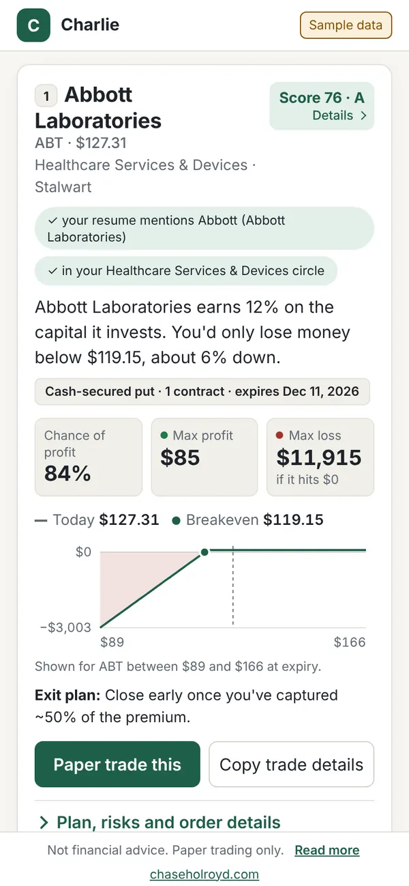

Investing tool · paper trading · demo live
Charlie: Invest in What You Know
Most trading apps start from the trade, so beginners act on hype instead of businesses they understand. Charlie starts from the person: it maps what you already know to companies, then offers the most conservative way to act on one.

Who it's for
A new investor who wants to learn options by paper trading companies inside their own circle of competence, the businesses their job and life already taught them.
How it works
- Profile: a resume, interests and brands become ranked sectors, each with the evidence behind it.
- Today: 1–3 ideas scored against a Charlie Munger-style checklist, each with the exact trade, chance of profit, max loss in dollars, breakeven, a payoff chart and an exit plan.
- Risk slider: it starts conservative (covered calls and cash-secured puts) and widens only when you choose. Uncovered calls and same-day options are never offered.
Product decisions
- Person before trade. Ideas come only from sectors the profile supports, and each card says why it is in your circle.
- Safety in code, not copy. Position sizing and banned strategies are enforced and tested in the engine, not left to a disclaimer.
- Paper only. Charlie never places real orders and is not financial advice.
Stack
One Python engine with 400+ tests. It runs as a local app and, for the demo, entirely in the browser with Pyodide, served from this site with no third-party calls.
The demo turns a fictional resume into paper trades on simulated prices, kept only in your browser: no sign-up, and Reset demo clears it. Not financial advice.